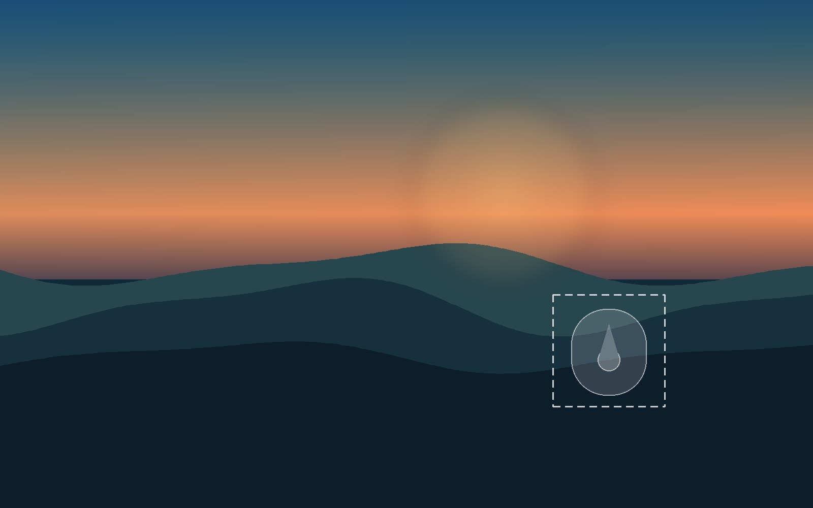

1
导入照片
拖入照片或文件夹，也可以用选择面板批量加入。单次最多 2000 张，支持 HEIF、JPEG、PNG 等常见格式。
开源 · 不联网 · 不上传
Safe Photo Mark
给照片加水印，并清掉会暴露你的拍摄信息。
不联网，不上传任何信息，全部在你的 Mac 上完成。

原生 Apple Silicon 应用，一次处理多张照片。不联网，不上传任何信息。
水印
叠加透明底图，批量加到照片上。SVG 会按目标尺寸重新绘制，放大也不会发糊。
每张照片的水印会随机放置，并避开画面中心 30% 区域。
位置
手动可在预览里拖动；随机会避开画面中心 30% 区域，且水印始终不出画；固定使用九宫格方位。
元数据
相机参数、拍摄时间、地理位置、描述与版权、厂家私有数据和缩略图都会移除，输出统一为 sRGB。关闭后会尽量保留拍摄信息，但仍会去掉原图缩略图，并把方向改成正向。也可开启随机重命名，避免文件名里的拍摄日期。
不联网，不上传任何信息。
本地
结果只写到你指定的文件夹，文件名默认加上 _safephotomark 后缀。应用在沙盒中运行，不联网，不上传任何信息。
导入、设定水印，然后开始处理。
拖入照片或文件夹，也可以用选择面板批量加入。单次最多 2000 张，支持 HEIF、JPEG、PNG 等常见格式。
放入 PNG 或 SVG，调整大小、透明度和位置方式，在预览里确认效果。
选择输出文件夹与格式，开始处理后可在 Finder 中查看结果。完成后可播放提示音。
不联网，不上传任何信息。处理始终在本机完成，原图保持不动。
应用没有网络权限，照片、水印和设置都不会离开这台电脑，也不会上传任何信息。
只读写你通过拖放或系统面板选中的文件和文件夹。
开启「移除元数据」时，不会从原图拷贝 EXIF、GPS、IPTC/XMP、MakerNote 等信息。
当前版本 3.0，需要 Apple M1 及以上，系统为 macOS 14 或更新版本。
从 GitHub Releases 下载 SafePhotoMark-3.0.dmg。
打开磁盘映像，把「脱敏水印」拖到「应用程序」文件夹。
在图标上右键（或 Control-点击）选择「打开」，并在提示中确认。安装包尚未经 Apple 公证，直接双击可能会被系统拦截；这不是应用损坏。
也可以在 GitHub 查看源码，用 Xcode 自行编译。